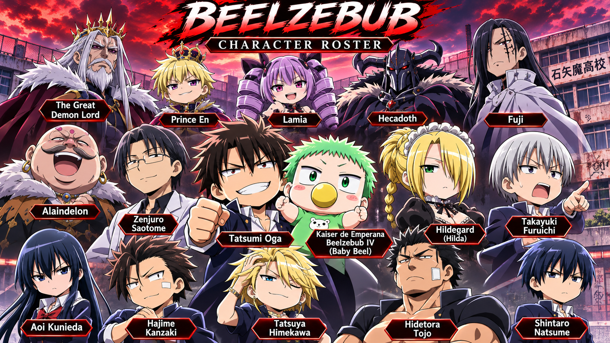

HUMAN PROTAGONIST · GUARDIAN
Tatsumi Oga ↗
The feared Ishiyama delinquent chosen to raise Baby Beel. His strength, stubbornness and developing responsibility define the central human journey.
A delinquent feared across his school is assigned the most unreasonable responsibility imaginable: raising the infant son of the Great Demon Lord. School rivalries become supernatural conflicts, while an unlikely parent-child bond sits at the center of the chaos.

Beelzebub (べるぜバブ) is a supernatural action-comedy manga written and illustrated by Ryūhei Tamura. It follows Tatsumi Oga, a feared first-year delinquent at Ishiyama High, whose life changes after he finds an infant carried by a strange man floating down a river. The infant is Kaiser de Emperana Beelzebub IV, the son of the Great Demon Lord, and Oga is selected to raise him.
Ryūhei Tamura — story and art
Weekly Shōnen Jump, 2009–2014; 28 collected volumes, 246 main chapters.
Studio Pierrot / Pierrot+, 60 episodes, 2011–2012.
A human delinquent becomes the unwilling guardian of the Demon Lord's infant son.
Ishiyama High, Saint Ishiyama Academy, Akumano Academy and the Demon World.
Delinquent brawling, supernatural action, absurd comedy and found family.
Oga is notorious for overwhelming strength and a brutal reputation. After finding Baby Beel, he learns that the child emits electricity when upset and must remain close to his chosen human parent. Hilda, Beel's demon maid, explains that Oga has been selected to raise the child until he can eventually destroy humanity. Oga tries to pass Beel to someone stronger, but his attempts draw him deeper into Ishiyama's hierarchy and demon-world politics.
The story expands from school rivalries into conflicts involving demon contractors, the Great Demon Lord's family, Behemoth's forces, the Pillar Squads and the mysterious Solomon Company. Oga and Beel develop a genuine bond neither initially chose.
A school infamous for its delinquent population. Physical strength, reputation, loyalty and grudges shape its informal hierarchy. Oga's standing as one of its most dangerous fighters makes him central even before the supernatural plot begins.
After Beel's uncontrolled power destroys Ishiyama High, the students transfer to Saint Ishiyama. Its formal rules, elite Six Knights and institutional hierarchy create a new arena for confrontation.
A later school setting that becomes entangled with the demon-world conflict and the interests of the Demon Lord's household.
A separate realm governed by demonic power structures, royal lineage, servants and military organizations. Its conflicts increasingly intersect with the human world as Beel's potential becomes harder to ignore.
Oga finds Beel and learns that the infant demon prince has been assigned to him. Hilda arrives to supervise the arrangement, while Oga searches for a stronger replacement parent.
Oga's search brings him into conflict with the Tōhōshinki: Kanzaki, Himekawa and Tōjō, while Aoi Kunieda and the Red Tails become important parts of his school life.
Beel's illness and unstable power lead Oga's group toward the Demon World, where his origins and the forces surrounding the royal family become clearer.
After Ishiyama High is destroyed, the group transfers to Saint Ishiyama Academy and clashes with its Six Knights. Zenjūrō Saotome reveals the existence of Spellmasters and trains Oga.
Oga's training and the escalating demon conflict expose him to human-demon contractors, Behemoth's 34th Pillar Squad and Prince En's ambitions.
The manga continues beyond the anime's endpoint through further school, family and demon-world conflicts, including the Solomon Company and the final Fuji confrontation.
Arc sequence and chapter ranges below refer to the extended manga narrative. Short transitions may be grouped differently by individual guides.
| ARC | CHAPTERS | FOCUS | ANIME COVERAGE |
|---|---|---|---|
| Tōhōshinki | 1–40 | Oga's attempts to transfer Beel and Ishiyama's strongest fighters. | Substantially adapted |
| Demon World | 41–47 | Beel's illness, suppressed power and the journey for help. | Adapted with changes |
| Rokkisei / Saint Ishiyama | 48–76 | Transfer to Saint Ishiyama and conflict with the Six Knights. | Substantially adapted |
| Prince En | 77–113 | Saotome's training, demon contractors and Behemoth. | Partially adapted |
| Akumano Academy | 114–138 | Academy conflict involving Furuichi and Behemoth's 34th Pillar Squad. | Episodes 51–59 cover selected material |
| Memory Loss | 139–145 | Hilda loses her memories and the household responds. | Manga continuation |
| Field Trip | 146–155 | A school trip turns into trouble. | Manga continuation |
| Hero Show | 156–159 | Short comedic/action transition. | Manga continuation |
| San Marx Private Academy of Fine Arts | 160–168 | Encounters and conflicts around San Marx. | Manga continuation |
| Mobichi | 169–176 | Furuichi-centered comedy and interpersonal developments. | Manga continuation |
| Saint Saint X'mas | 177–186 | Christmas-season events and rivalries. | Manga continuation |
| Killer Six Elements | 187–224 | The rebuilt Ishiyama group faces the Six Elements and stronger opponents. | Manga continuation |
| Solomon Company | 225–231 | Oga travels to the Solomon Company and learns about Beel's mother. | Manga continuation |
| Fuji Assault | 232–240 | Final confrontation and resolution of the parent-child journey. | Manga continuation |

Principal characters from both continuities. Manga-only developments will be labelled in the individual files.
The feared Ishiyama delinquent chosen to raise Baby Beel. His strength, stubbornness and developing responsibility define the central human journey.
The infant son of the Great Demon Lord. Baby Beel bonds with Oga and possesses immense demonic energy expressed through electrical discharges.
Beel's demon maid and caretaker. She supervises Oga, protects the prince and becomes a central member of the unusual household.
Oga's closest friend, whose intelligence, cowardice, ambition and comic misfortune repeatedly pull him into supernatural trouble.
Leader of the Red Tails and third member of the Tōhōshinki. A formidable fighter whose feelings for Oga complicate her disciplined leadership.
One of Ishiyama's strongest delinquents. Initially an antagonist, he develops into a recurring ally and an important figure in the school's hierarchy.
A wealthy and calculating delinquent who relies on money, schemes and technology as well as fighting ability.
The fourth and exceptionally powerful member of the Tōhōshinki. His calm temperament contrasts with his formidable strength.
An eccentric demon capable of transporting people between locations and dimensions.
An experienced Spellmaster who introduces Oga to demon contracts and helps him control Beel's power.
Beel's father and ruler of the demon world. His family and succession interests shape the supernatural conflict.
Another son of the Great Demon Lord whose rivalry with Beel connects school events to demon-world politics.
A demon girl associated with the medical and research side of the demon world who helps Beel during a critical illness.
A member of Behemoth's forces whose actions connect the human delinquents to the demon military hierarchy.
A capable and enigmatic Ishiyama student who observes more than he reveals and becomes an important ally.
A powerful figure connected to the Solomon Company and the later manga conflict, central to the final stages.
Beel possesses immense power for an infant. His emotional state can trigger electrical discharges, and his connection to Oga allows that power to be channelled through their bond. The lightning motif represents demonic energy rather than ordinary electricity.
Oga's bond with Beel is marked by a seal on his body. Its spread reflects the depth of their connection and the amount of Beel's power Oga can draw upon. It is both a combat mechanic and a visible measure of their relationship.
Humans who form contracts with demons and command their power under specific terms. Saotome teaches Oga the discipline and risks involved; a contract is not a cost-free increase in strength.
Oga and Ishiyama fighters rely on strength, toughness, timing and close-range technique.
Effectiveness depends on compatibility, control and the conditions of the pact.
Royal status and military rank shape the political stakes but do not guarantee victory.
Uncontrolled power can endanger allies, damage surroundings and overwhelm inexperienced users.
The delinquent school whose informal hierarchy revolves around its strongest fighters.
The four feared leaders associated with Ishiyama: Kanzaki, Himekawa, Kunieda and Tōjō.
An all-female delinquent group led by Aoi Kunieda.
The school receiving the Ishiyama students after their original campus is destroyed.
Saint Ishiyama's elite student fighters and club captains.
A powerful demon organization with a military structure including the 34th Pillar Squad.
A shadowy organization whose interests and manipulation become significant in the later manga.
The Great Demon Lord's family, servants and competing heirs.
The television anime ran for 60 episodes from January 2011 to March 2012. It adapts much of the early manga but compresses and rearranges material. The final episode is anime-original rather than a direct adaptation of the manga's final chapter.
60 episodes · Studio Pierrot / Pierrot+
A 2010 OVA preceded the television series and adapts an early portion of the premise.
Episode guides identify substantial manga adaptation through the early and middle episodes, with selected manga material in episodes 58–59 and an original final episode 60. Filler classifications vary for mixed episodes and rearranged chapters. The anime is treated as its own continuity rather than forced into the manga chronology.
| TOPIC | ANIME | MANGA |
|---|---|---|
| Scope | 60 episodes, 2011–2012. | Complete serialization, 2009–2014; 28 volumes. |
| Story coverage | Adapts early and middle story with compression and rearrangement. | Continues through the manga's final Fuji Assault Arc. |
| Akumano Academy | Episodes 51–59 adapt selected material but do not complete the manga arc. | The full arc continues through its manga chapters. |
| Finale | Episode 60 is an anime-original conclusion. | Continues through Memory Loss, Killer Six Elements, Solomon Company and Fuji Assault. |
| Recommended approach | Watch as a distinct adaptation. | Read from chapter 1 for the complete story and fullest context. |
The anime closes with its original final episode after the Akumano Academy material. It provides a self-contained farewell-style pause but does not resolve the complete manga storyline. It is not the manga's canonical conclusion.
The manga continues through Memory Loss, Field Trip, Hero Show, San Marx, Mobichi, Saint Saint X'mas, Killer Six Elements, Solomon Company and Fuji Assault. The closing chapters return to Oga and Beel's parent-child journey and provide the print continuity's resolution.
Oga does not seek parenthood and initially treats Beel as a burden to transfer. The story tests whether responsibility can emerge through repeated care rather than deliberate choice at the beginning.
Oga's reputation is built on winning fights. Raising Beel challenges him to use strength in service of someone vulnerable, not merely to dominate opponents.
The household forms through obligation, conflict and practical care. Hilda, Oga, Beel and their friends become connected despite different origins.
The series places absurd domestic comedy beside supernatural violence and demon politics. The tonal contrast is central to its identity.
Publisher and primary publication information take precedence where available. Adaptation details are cross-checked against episode and manga guides.
Ryūhei Tamura’s action comedy follows delinquent Tatsumi Oga, whose life changes when he encounters a baby who is actually the demon king's son. Oga becomes the child's human caretaker and is drawn into a collision between school-gang rivalries, supernatural obligations and the absurd logistics of raising a powerful infant. The series uses exaggerated delinquent conventions as the framework for an increasingly supernatural ensemble comedy.
Ishiyama High is a school populated by violent delinquents and organized around reputation, strength and gang affiliation. The human school environment gradually intersects with the Demon World and its royal household. The contrast between ordinary school routines and demonic expectations drives much of the comedy, while rival schools and factions give the fighting plot an expanding social map.
The supernatural system centers on demonic power, contracts and the unusual bond between Oga and Baby Beel. Oga's role as a human vessel/caretaker is not simply a conventional power-up: the relationship creates conditions, risks and responsibilities. Demonic techniques, familiars and specialized abilities should be recorded by user and context rather than collapsed into a single ranking.
The Ishiyama delinquents, Oga's allies, rival school groups and Demon World figures each have distinct motives. Hilda's role as a demon-world attendant and Furuichi's role as Oga's human friend create two different kinds of support around the central pair. The roster's alliances shift as the series moves between school conflict and supernatural escalation.
Under its slapstick surface, the series explores responsibility, chosen bonds, loyalty, social reputation and the transformation of a violent delinquent into someone accountable for another life. Its tone deliberately alternates between gag comedy and high-energy battle manga. The anime and manga should be compared for coverage and pacing without assuming that the animated run completes every manga development.
Editorial note: this dossier is a narrative and conceptual expansion, not a substitute for a chapter-by-chapter source audit. Exact episode/chapter ranges, quotations, production credits and disputed continuity points require title-specific verification.
Ryūhei Tamura’s action comedy follows delinquent Tatsumi Oga, whose life changes when he encounters a baby who is actually the demon king’s son. Oga becomes the child’s human caretaker and is drawn into a collision between school-gang rivalries, supernatural obligations and the absurd logistics of raising a powerful infant. The series uses delinquent conventions as the framework for an increasingly supernatural ensemble comedy.
Ishiyama High is populated by delinquents and organized around reputation, strength and gang affiliation. The human school environment gradually intersects with the Demon World and its royal household. The contrast between ordinary school routines and demonic expectations drives much of the comedy, while rival schools and factions give the fighting plot an expanding social map.
The supernatural system centers on demonic power, contracts and the unusual bond between Oga and Baby Beel. Oga’s role as a human vessel and caretaker is not simply a conventional power-up: the relationship creates conditions, risks and responsibilities. Demonic techniques, familiars and specialized abilities should be recorded by user and context rather than collapsed into a single ranking.
The Ishiyama delinquents, Oga’s allies, rival school groups and Demon World figures each have distinct motives. Hilda’s role as a demon-world attendant and Furuichi’s role as Oga’s human friend create two different kinds of support around the central pair. Alliances shift as the series moves between school conflict and supernatural escalation.
Under its slapstick surface, the series explores responsibility, chosen bonds, loyalty, social reputation and the transformation of a violent delinquent into someone accountable for another life. Its tone alternates between gag comedy and battle manga. The anime and manga should be compared for coverage and pacing without assuming that the animated run completes every manga development.
Research standard: exact episode/chapter ranges, production credits and disputed continuity points require title-specific source verification. This analysis does not replace a complete source-indexed chronology.